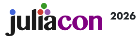

MOLE.jl: Julia implementation of MOLE
August 10-15, 2026 - Johannes Gutenberg University Mainz, Germany
Presenter: Prof. Valeria Barra, San Diego State University.
Minisymposia Presentation
|

|
JuliaCon Global 2026
Conference on the Julia programming language.
|
Mimetic discretization methods provide compatible numerical approximations for partial
differential equations (PDEs) that mimic desired properties of the model, e.g.,
conservation laws, symmetry and positivity of solutions, duality and self-adjointness
of differential operators, and exact mathematical identities of the vector and tensor
calculus by construction. The Mimetic Operators Library Enhanced (MOLE) is an open-source
software library that implements mimetic difference operators and associated tools for robust,
accurate, and physically consistent numerical solutions of PDEs. Originally developed in
MATLAB/Octave and C++, we present here its Julia implementation: MOLE.jl.
MOLE.jl offers ease-of-use via idiomatic and user-extensible Julia APIs, integration with
the Julia ecosystem tooling, modularity, and composability of differential operators.
This new implementation broadens MOLE’s user base and allows for performance portability
while maintaining a consistent mathematical and software abstraction. We will show
representative use cases that illustrate how MOLE.jl supports rapid prototyping for
compatible simulations of PDE models across multiple application domains.